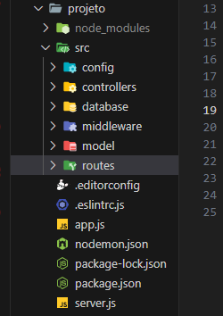

Nesta etapa, será explicado como iniciar o projeto e as pastas q sera precisa e todas as instruções necessarias;
segui abaixo a imagem da estrutura:

Esta estrutura de projeto foge da forma anterior trabalhada, como em todos outros prtojetos, usamos o MVC, desta vez usaremos a forma de manipulação de dados, abaixo segue a explicação.
API REST, também chamada de API RESTful, é uma interface de programação de aplicações (API ou API web) em conformidade com as restrições do estilo de arquitetura REST, permitindo a interação com serviços web RESTful. REST é a sigla em inglês para "Representational State Transfer", que em português significa tansferência de estado representacional. Essa arquitetura foi criada pelo cientista da computação Roy Fielding.
Uma API é um conjunto de definições e protocolos usado no desenvolvimento e na integração de aplicações. Às vezes, APIs são descritas como um contrato entre um provedor e um usuário de informações, estabelecendo o conteúdo exigido pelo consumidor (a chamada) e o conteúdo exigido pelo produtor (a resposta). Por exemplo, o design da API de um serviço meteorológico pode especificar que o usuário forneça um CEP e o produtor responda em duas partes, a primeira contendo a temperatura mais elevada e a segunda com a temperatura mais baixa.
Em outras palavras, ao interagir com um computador ou sistema para recuperar informações ou executar uma função, a API ajudará a comunicar o que você quer ao sistema para que ele entenda e realize o que foi solicitado.
Pense nas APIs como um mediador entre os usuários ou clientes e os recursos ou serviços web que eles querem obter. As APIs também servem para que organizações compartilhem recursos e informações e, ao mesmo tempo, mantenham a segurança, o controle e a obrigatoriedade de autenticação por permitirem determinar quem tem acesso e o que pode ser acessado.
Outra vantagem de usar APIs é que não é necessário saber todos os detalhes sobre o armazenamento em cache, como os recursos são recuperados ou qual é a origem deles.
REST não é um protocolo ou padrão, mas sim um conjunto de restrições de arquitetura. Os desenvolvedores de API podem implementar a arquitetura REST de maneiras variadas.
Quando um cliente faz uma solicitação usando uma API RESTful, essa API transfere uma representação do estado do recurso ao solicitante ou endpoint. Essa informação (ou representação) é entregue via HTTP utilizando um dos vários formatos possíveis: Javascript Object Notation (JSON), HTML, XLT, Python, PHP ou texto sem formatação. O formato JSON é a linguagem de programação mais usada porque, apesar de seu nome, é independente de qualquer outra linguagem e pode ser lido por máquinas e humanos.
Lembre-se também de que cabeçalhos e parâmetros são importantes nos métodos HTTP de uma solicitação HTTP de API
RESTful porque contêm informações relevantes sobre o identificador, bem como metadados, autorização, Uniform
Resource Identifier (URI), cache, cookies e outras informações da solicitação. Há os cabeçalhos da solicitação e
os cabeçalhos da resposta, cada um contendo as informações de suas respectivas conexões HTTP e códigos de status.
Para uma API ser considerada do tipo RESTful, ela precisa está em conformidade com os seguintes critérios:
Embora uma REST API precise estar em conformidade com os critérios acima, ela é considerada mais fácil de usar do que um protocolo prescrito, como o Protocolo Simples de Acesso a Objetos (SOAP). Esse tipo de protocolo tem requisitos específicos, como o sistema de mensageria XML, além de precisar cumprir com exigências de segurança incorporada e transações, o que o torna mais lento e pesado.
Em comparação, a arquitetura REST é composta de um conjunto de diretrizes que podem ser implementadas conforme necessário. Isso faz com que as APIs REST sejam mais rápidas, leves e escaláveis, o que é ideal para a Internet das Coisas (IoT) e o desenvolvimento de aplicativos mobile.